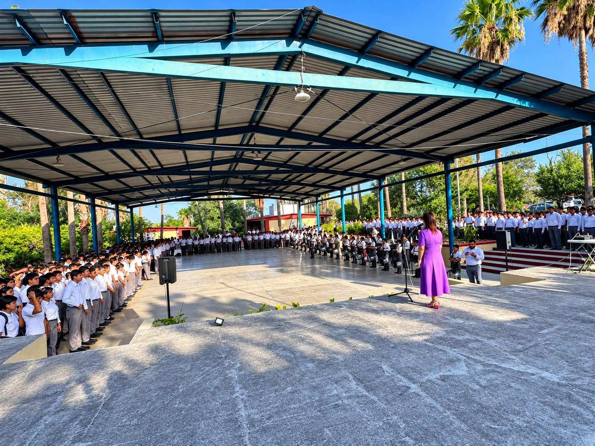
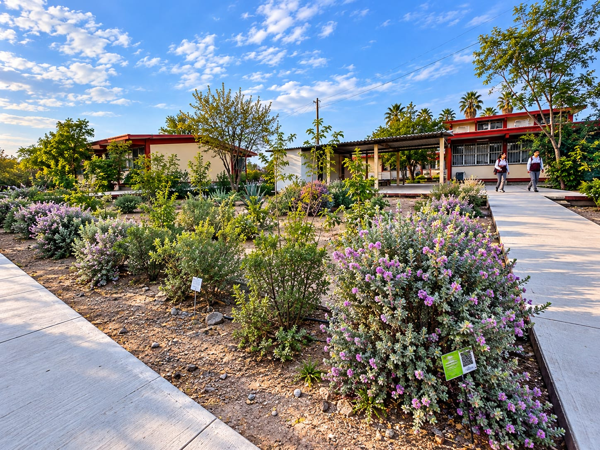
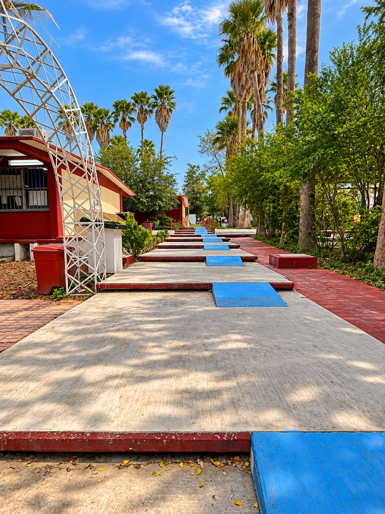

Nuestra institución
Entrada del plantel
El acceso a nuestra institución, punto de encuentro para estudiantes, docentes y visitantes.
Cada espacio guarda una historia y cada experiencia deja una huella. Descubre las instalaciones, las actividades y los momentos que forman parte de la comunidad del ITACE Plantel Reynosa.
Esta colección reúne fotografías de espacios escolares y actividades que reflejan la convivencia, la identidad institucional y el entorno donde los estudiantes desarrollan sus conocimientos y habilidades.
Conoce los espacios que forman parte de nuestra institución.
El acceso a nuestra institución, punto de encuentro para estudiantes, docentes y visitantes.

Un espacio para hacer una pausa durante la jornada y compartir momentos con los compañeros.

Un área abierta que forma parte de las instalaciones y puede servir para actividades de la comunidad.

Una segunda vista de los espacios abiertos del plantel y de su entorno cotidiano.

Los espacios al aire libre contribuyen a crear un entorno agradable para la comunidad escolar.

Áreas de circulación que conectan distintos espacios de la institución durante la jornada.

Espacios destinados a las actividades administrativas y a la atención de la comunidad educativa.

Un espacio relacionado con el aprendizaje práctico y el desarrollo de habilidades técnicas.

Un espacio de encuentro que forma parte de la experiencia diaria de los alumnos.
Momentos de participación, identidad y convivencia.

Actividades que ofrecen oportunidades para convivir, participar y compartir experiencias con la comunidad.

Un momento para celebrar, compartir y disfrutar de las actividades propias de la temporada navideña.

Actividades que promueven el respeto por los símbolos patrios y los valores cívicos.

Momentos que reflejan el sentido de pertenencia y la participación de la comunidad educativa.

Una actividad que fomenta la coordinación, la disciplina, el respeto y el trabajo en equipo.

Un espacio relacionado con la preparación de materiales y las actividades de la banda de guerra.

Actividades para compartir talentos, conocimientos y experiencias frente a la comunidad educativa.